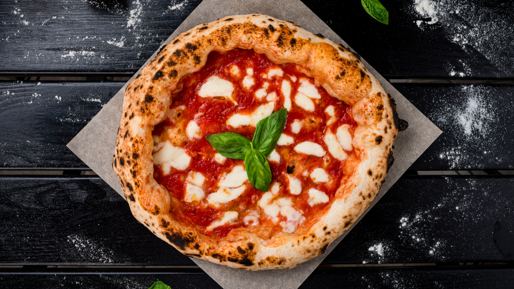

Pizza

This is perhaps the most authentic Neapolitan pizza recipe you will find!
Authentic Neapolitan pizza originates from the birthplace of pizza, Naples.
It involves simple ingredients and traditional methods that have been largely forgotten for quite a while.
Luckily it is bouncing back, with many people finding this beautiful style of pizza for the first time.
Ingredients
- 1 ball Best Homemade Pizza Dough
- ⅓ cup Easy Pizza Sauce
- 3 ounces fresh mozzarella cheese (or about ¾ cup shredded mozzarella)
- Kosher salt
- 2 basil leaves
- Semolina flour or cornmeal, for dusting the pizza peel
Steps
- Prepare the dough using the Best Pizza Dough recipe. Follow the preparation instructions in the dough recipe if prepared in advance.
- Place a pizza stone in the oven and preheat to 500°F. OR preheat your pizza oven.
- Make the Homemade Pizza Sauce.
- Slice the mozzarella into ¼ inch thick pieces. If it’s incredibly watery fresh mozzarella (all brands vary), you may want to let it sit on a paper towel to remove moisture for about 15 minutes then dab the mozzarella with the paper towel to remove any additional moisture.
- When the oven is ready, stretch the dough into a circle; see How to Stretch Pizza Dough for instructions. Sprinkle a pizza peel with semolina flour or cornmeal, then carefully place the dough on top. Spread the pizza sauce across the dough. Top with mozzarella cheese. Taste a bite of the mozzarella cheese; if it does not taste salty, add a few pinches of kosher salt to the pizza.
- If you’re baking in a pizza oven, add the basil leaves. For baking in a standard oven, add the basil leaves after you bake (the leaves turn black in a standard oven).
- Transfer the pizza to the pizza stone on the pizza peel, then bake until the cheese is melted, about 7 minutes in the oven (or 1 minute in the pizza oven). Slice into pieces and serve immediately.